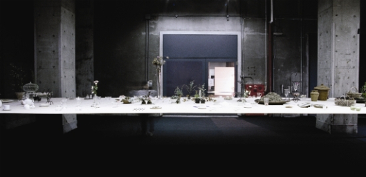

건축과 가구
여기 3mm 두께의 테이블이 있다. 폭 2.6m, 높이 1.1m의 이 테이블의 길이는 9.5m다. 일본의 젊은 건축가, 이시가미 준야가 2005 기린아트프로젝트에서 선보인 이 테이블은 허공에 뜬 얇은 면 하나로 극단적인 길이를 장악했다. 물론 이 테이블 위에서 식사가 가능할 리 없지만, 간단한 사물들을 올려놓은 채로 모양이 유지된다.
종잇장 같은 테이블 위로 꽃병과 접시가 떠있는 장면은 중력을 이겨낼 길 없는 건축물의 태생적인 한계, 어쩔 수 없는 물리적인 부피와 그 안을 채우는 공간감을 무력하게 한다. 이시가미 준야는 최적의 곡률과 구조 해석을 통해 얇은 철판 하나가 가진 가능성을 탐색하고 싶었을 것이다.
건축가는 왜 가구를 디자인 하는가
결론부터 말하자면, 건축가의 가구 디자인은 새로운 경향이 아니다. 더구나 아름답거나 기상천외하거나 아이디어로 점철된 디자인 가구들 사이에서 건축가의 이름을 찾는 것은 어려운 일이 아니다.
특히 의자의 역사에서 건축가의 이름을 뺀다면, 20세기의 한 챕터는 건너뛰어야 할지도 모른다. 알바 알토는 파이미오 요양원의 디자인개념을 따라 의자를 설계했고, 미스 반 데어 로에는 바르셀로나 파빌리온에 적합한 바르셀로나 체어와 투겐타트저택를 위해 부르노 체어를 디자인했다.
르 꼬르뷔지에, 마르셀 브루이어나 찰스 임스는 말할 것도 없이, 20세기 모더니스트들은 자신의 실험적인 시대정신을 표현할 수 있는 방법을 모색했고, 건축뿐 아니라 그 안에 놓일 가구를 통해서도 반영하고자 했다. 가구의 도덕적, 미학적 우월성과 조각적인 독창성을 중시했으며, 강철과 플라스틱과 같은 새로운 재료와 새로운 접합방식에 대한 실험을 통해 공업화라는 현실을 받아들이면서도 지성과 균형미를 통합시키고자 애썼다.
“형태는 기능을 따른다”는 새로운 미학은 건축의 연장선에서 의자를 통해 집약된 셈이다. 갤런 크렌츠의 표현대로(『의자』), 20세기 건축가들에게 의자는 예술적 표현의 매체이자 소재다.